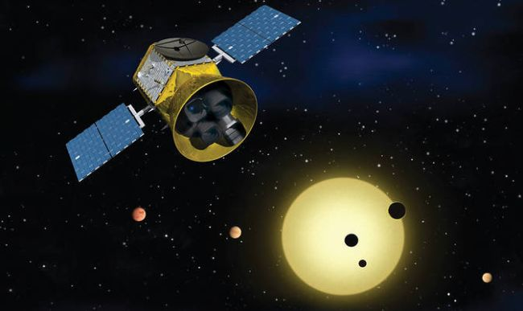

Hi! I'm Danielle, and welcome to my page. I am one of the Helen Fellows at AMNH.
Background
I graduated from Columbia University, majoring in Astrophysics, in 2019 and New York University in 2004.
Inspiration
I love studying astronomy because it gives you a great persepective on life. Everyone is so precious, amazing and unique. So far we haven't found any other place in the entire universe like Earth!
Cool Quotes
- "The cosmos is all that is or ever was or ever will be. Our feeblest contemplations of the Cosmos stir us—there is a tingling in the spine, a catch in the voice, a faint sensation, as if a distant memory, or falling from a height. We know we are approaching the greatest of mysteries." - Carl Sagan
- "Man must rise above the Earth—to the top of the atmosphere and beyond—for only thus will he fully understand the world in which he lives." - Socrates
My research interests (in pictures)
Image Credits (L-R): STScI/HST, STScI/HST, MIT/TESS
Here's some more details:
I have had internships with Leiden Observatory (Leiden, The Netherlands), Space Telescope Science Institute (Baltimore, MD), and with the Astronomy department at the University of Texas at Austin. After graduating, I have been working as an computational researcher and educator in the Astrophysics department of the American Museum of Natural History. After more than three years of working in the astronomy field I am currently looking to transfer my skills gained from academia into industry data science and software engineering roles.